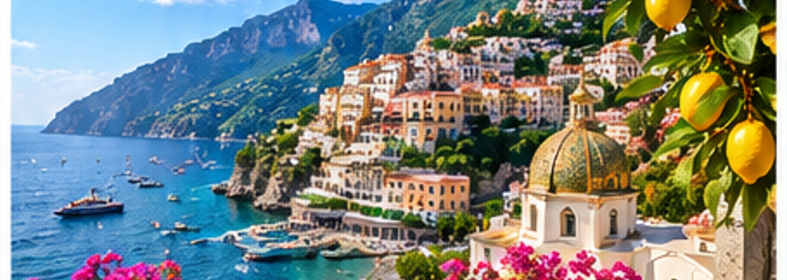
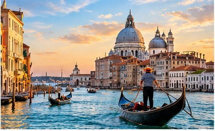
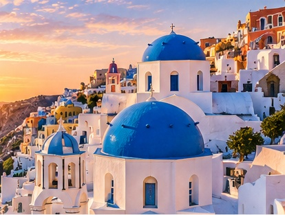
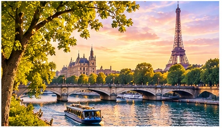

Step Into a Rich
and Living History.
Wander through cities where every street seems to tell a story. Glide along a Venetian canal, stand before ancient ruins, explore medieval squares, and see landmarks you have known from photographs suddenly become real. Europe has a way of making history feel wonderfully alive.
Discover Charming Towns
and Coastal Gems.
Picture a morning along the Mediterranean, with colorful villages climbing the hills above brilliant blue water. Linger over lunch at a sidewalk café, stroll cobblestone streets, browse a local market, or simply find a beautiful overlook and stay awhile. Each port offers its own personality and pace.


Experience a New
Culture Every Day.
One day might bring art and architecture, another unforgettable food, music, gardens, or a quiet neighborhood you never expected to love. A European cruise lets you sample many different worlds in one journey while returning each evening to the comfort of your ship.
Let’s Make This Dream Come True.
I WANT TO MAKE THIS DREAM COME TRUE ›Tell Ashley what you’re dreaming about, and she’ll help you begin.